خبراء محترفون في آلات تصنيع الصابون
تأسست شركة Kaifeng Jasun Industry Co., Ltd. في عام 2005، وهي متخصصة في آلات تصنيع الصابون المهنية وخطوط الإنتاج الكاملة. مع أكثر من عقدين من الخبرة الصناعية، نحن ملتزمون بتزويد مصنعي الصابون العالميين بآلات معالجة الصابون عالية الأداء بدءًا من التصبين وحتى التغليف النهائي للصابون. تم تصدير أجهزتنا إلى أكثر من 50 دولة ومنطقة، بما في ذلك الدول المتقدمة مثل الولايات المتحدة الأمريكية.
تنقسم العملية برمتها إلى خطوتين رئيسيتين.
الخطوة الأولى (الجزء أ) هي عملية التصبين والتجفيف لإنتاج نودلز الصابون. وهي عبارة عن تفاعل تصبين بين الزيوت النباتية/الدهون الحيوانية والصودا الكاوية لتكوين قاعدة الصابون. ثم تُعالج قاعدة الصابون هذه من خلال نظام تجفيف بالتفريغ الهوائي وجهاز تحبيب، حيث يتم بثقها إلى نودلز الصابون.
الخطوة الثانية (الجزء ب) هي تحويل نودلز الصابون إلى صابون جاهز. توضع نودلز الصابون في خلاط الصابون، حيث تُخلط مع العطر والصبغة. ثم يُغذى الخليط إلى جهاز تكرير. والهدف الأساسي من ذلك هو مزج وتجانس وطحن مواد الصابون جيدًا. بعد ذلك، تصل نودلز الصابون إلى مطحنة ثلاثية الأسطوانات، حيث تُطحن إلى صفائح صابون رقيقة. تُنقل هذه صفائح الرقيقة عبر سير ناقل إلى آلة تشكيل الصابون بالتفريغ الهوائي المزدوجة أو آلة تشكيل الصابون باللولب الأحادي (آلة بثق الصابون)، حيث تُعاد معالجتها وتُبثق باستمرار لتشكيل قالب صابون طويل بالشكل المطلوب. بعد ذلك، يُقطع القالب الطويل ويُشكّل إلى قوالب صابون فردية بالحجم المطلوب باستخدام آلة تقطيع الصابون الأوتوماتيكية أو آلة ختم الصابون. وأخيراً، تُغلّف قوالب الصابون الجاهزة بواسطة آلة تغليف (آلة تغليف الصابون بالوسائد/آلة تعبئة الصابون في علب كرتونية/آلة تغليف الصابون بالورق).
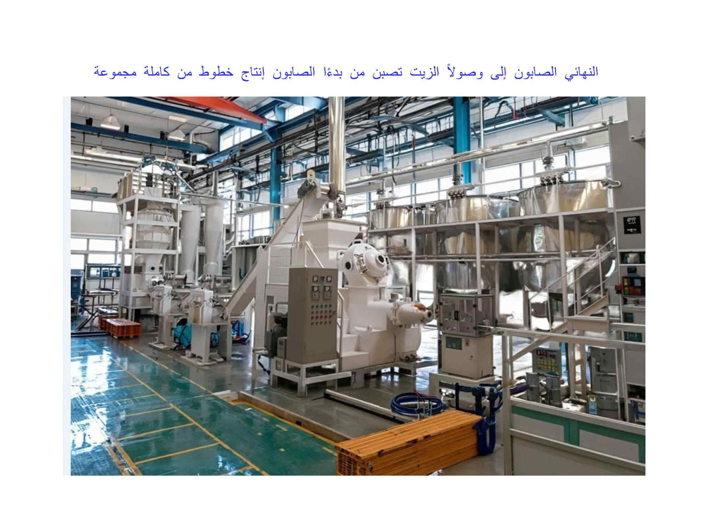
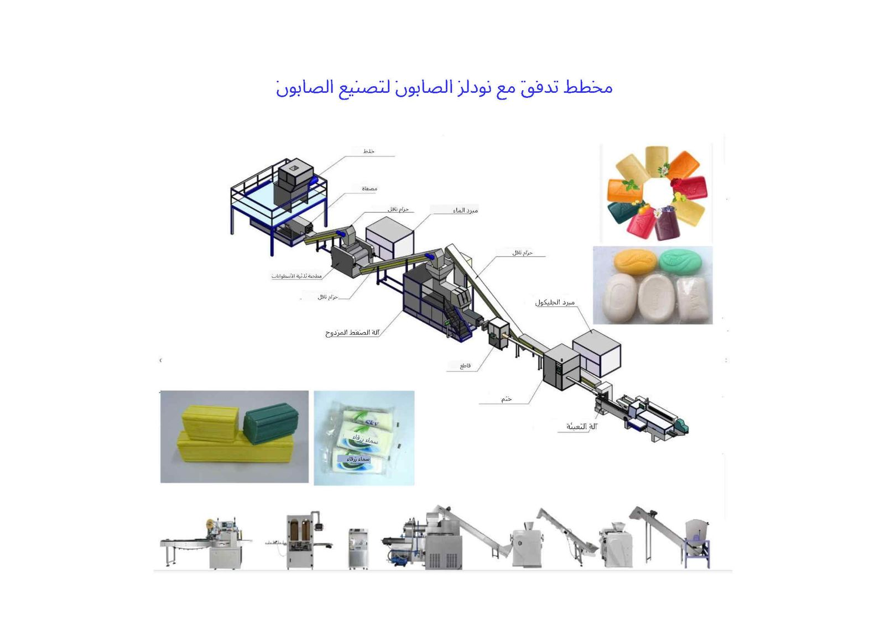
| 1 | 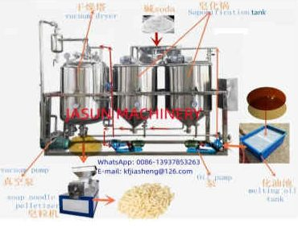 | نظام التصبين والتجفيف بالفراغ (صغير / متوسط)نظام تكامل صغير ومتوسط للتصبين والتجفيف بالفراغ من الزيوت المختلفة وصودا الكاوية لإنتاج نودلز الصابون. السعة: |
| 2 | 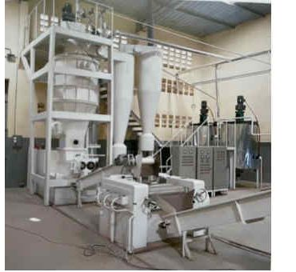 | نظام التصبين والتجفيف بالفراغ (كبير)نظام التصبين والتجفيف بالفراغ الكبير من الزيوت المختلفة وصودا الكاوية لإنتاج نودلز الصابون. السعة: |
| 3 | 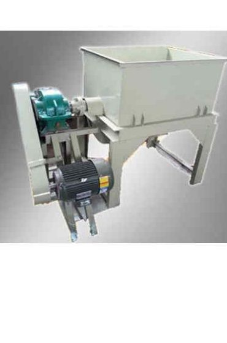 | خلاط صابون صناعيالوظائف الأساسية ومبدأ العمل: هذه المعدات هي قطعة حيوية من الآلات في المرحلة الأمامية من خط إنتاج الصابون. تُستخدم بشكل أساسي لخلط نودلز الصابون بكفاءة وبشكل موحد مع إضافات متنوعة، مثل العطور والأصباغ والزيوت الأساسية وغيرها من المكونات المساعدة. يتم تجهيز الخلاط بشفرات برغي داخلية. أثناء التشغيل، يقوم المحرك بتدوير العمود الرئيسي، مستخدمًا الحركة الميكانيكية للبرغي لرفع نودلز الصابون من الأسفل بشكل مستمر، وتقليبها وتفريقها. تسمح هذه الحركة القوية من القص والحمل الحراري للعطور السائلة والأصباغ الصلبة بالتغلغل بسرعة وتغطية نودلز الصابون بشكل متساوٍ في وقت قصير. وبالتالي، فإنه يؤسس قاعدة صابون سلسة ومكررة وموحدة اللون لعمليات الطحن والضغط (البثق) اللاحقة. الميزات الهيكلية: |
| 4 | 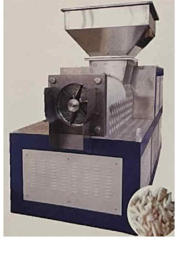 | مصفاة الصابونالتطبيقات: الميزات الرئيسية: |
| 5 | 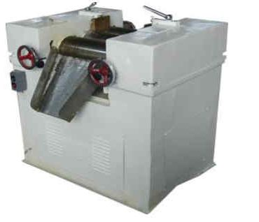 | مطحنة ثلاثية الأسطواناتتحويل وتعديل البلورات: بعد الخلط، قد يكون التبلور الداخلي للصابون غير متساوٍ. تستخدم مطحنة الأسطوانات الثلاثة الضغط العالي لإجبار تحول بلورات الصابون، مما يشكل هيكلًا بلوريًا يتمتع بمرونة أفضل. هذا يضمن أن الصابون النهائي أقل عرضة للتشقق ولا يصبح طريًا بسهولة عند نقعه في الماء. |
| 6 | 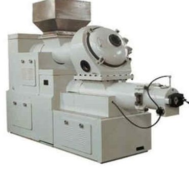 | آلة ضغط الصابون الفراغية ذات المرحلتين (أو آلة بثق الصابون الفراغية)إزالة الهواء بكفاءة عالية: تخضع مادة الصابون لاستخراج كامل للهواء والفقاعات داخل غرفة فراغ محكمة الإغلاق. وهذا يجعل الهيكل الداخلي للصابون كثيفًا ومضغوطًا بشكل استثنائي، مما يمنع بشكل فعال وجود تجاويف أو شقوق داخلية، بينما يجعل قضيب الصابون النهائي أكثر متانة وأقل عرضة لأن يصبح طريًا عند نقعه في الماء. |
| 7 | 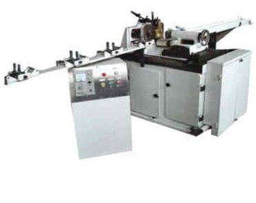 | آلة ختم الصابون الأوتوماتيكية / ختم الصابون XD120تشكيل ضغط ثلاثي الأبعاد: الصابون الناتج من العملية السابقة (آلة الضغط الفراغية) هو مجرد قضيب طويل مستمر. من خلال إغلاق وتثبيت القوالب العلوية والسفلية (أو اليسار واليمين) بدقة، تقوم هذه المعدات بختم قوالب الصابون تحت ضغط عالٍ إلى قضبان صابون نهائية تتميز بملامح مثالية وزوايا مدورة أو أشكال ثلاثية الأبعاد محددة. |
| 8 | 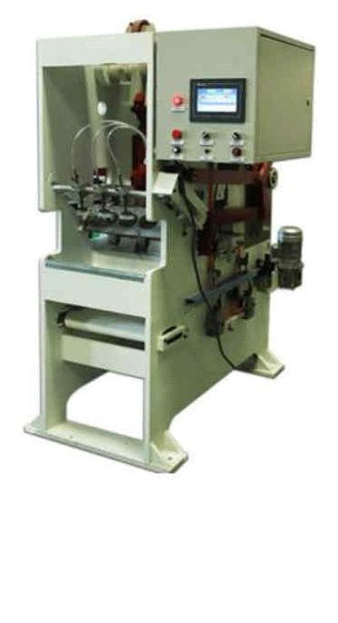 | آلة ختم صابون المرحاض الأوتوماتيكية XDA1000التطبيقات: الميزات الرئيسية: |
| 9 | 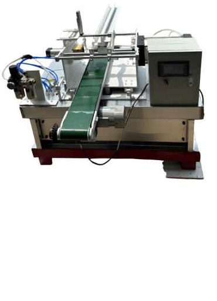 | آلة ختم الصابون الهوائية الأوتوماتيكية XD100التطبيقات: المتطلبات المساعدة: |
| 10 | 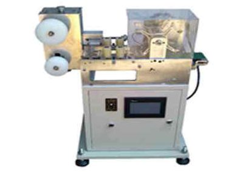 | آلات ختم الصابون وقطعه تلقائيًاقطع مستمر بدقة: المسؤولية الأساسية لهذه المعدات هي قطع قضيب الصابون المستمر المبثوث من آلة البثق في الفراغ بدقة وسرعة إلى كتل صابون فردية متساوية (أقراص) وفقًا للأبعاد المستهدفة المحددة مسبقًا. |
| 11 | 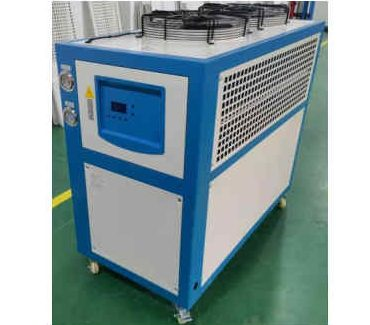 | مبرد درجة حرارة منخفضةتبريد القوالب العميقة بدقة: تقوم هذه المعدات بشكل أساسي بتدوير وتوصيل سائل تبريد منخفض الحرارة لتوفير تقليل مستمر وقسري في درجة الحرارة للقوالب المعدنية داخل آلة ختم الصابون الأوتوماتيكية. |
| 12 | 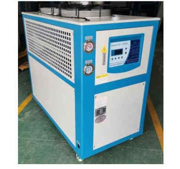 | آلة مياه التبريدتبديد الحرارة الناتجة عن الاحتكاك لمنع ذوبان الصابون: حيث تقوم مطحنة الثلاث أسطوانات بتمزيق الصابون بسرعات عالية ويقوم جهاز الطرد الفراغي بإخراج الصابون تحت ضغط عالٍ، يتم توليد كمية كبيرة من الحرارة الناتجة عن الاحتكاك الفيزيائي. تقوم هذه المعدات بضخ مياه مبردة متداولة إلى الأسطوانات المجوفة للمطحنة والبراميل/الأغطية لجهاز الطرد لإزالة الحرارة بقوة، مما يمنع الصابون من التليين أو الذوبان أو الالتصاق بالأسطوانات بسبب ارتفاع درجة الحرارة. |
| 13 | 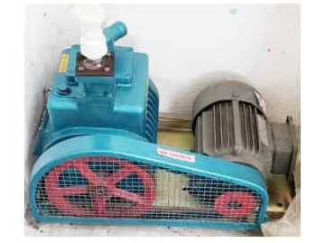 | مضخة فراغاستخراج الفراغ بكفاءة عالية: المسؤولية الأساسية لهذا الجهاز هي الاتصال مع الغرفة المغلقة لآلة ضغط الفراغ، واستخراج الهواء والفقاعات المحبوسة بين حبيبات الصابون بشكل كامل وقوي. |
| 14 | 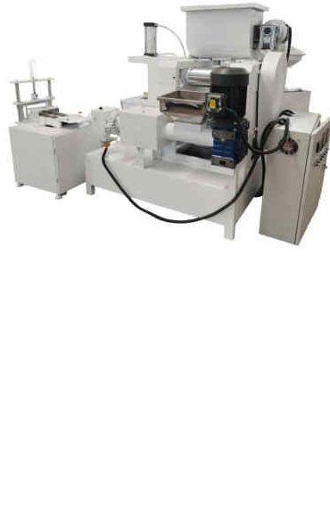 | معدات إنتاج الصابون المتكاملة الصغيرةخط إنتاج الصابون المصغر الشامل: هذه خط إنتاج صابون مصغر مصمم خصيصًا لورش العمل المنزلية والحرفيين والاستوديوهات الصغيرة أو المختبرات التعليمية. الميزات الرئيسية: |
| 15 | 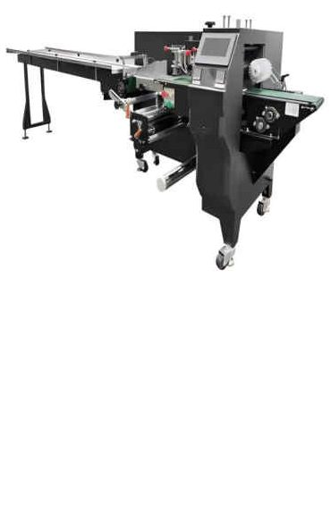 | آلة تعبئة الصابون، نمط الوسادةتعبئة أوتوماتيكية كاملة عالية السرعة بنمط الوسادة: المسؤولية الأساسية لهذا الجهاز هي لف أقراص الصابون الصلبة المصبوبة تلقائيًا في فيلم بلاستيكي مركب، وتنفيذ الختم الأفقي والقطع في كل الطرفين والختم الطولي في الخلف لتشكيل عبوة مغلقة بالكامل بنمط الوسادة. |
| 16 | 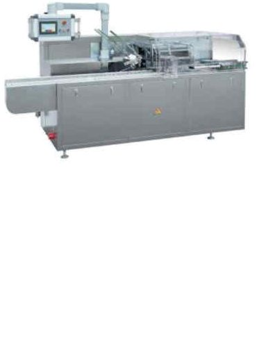 | آلة التعبئة الكرتونية / آلة تعبئة الصابون، نمط صندوق كرتونيتشكيل الكرتون والتعبئة الأوتوماتيكية بالكامل: المسؤولية الأساسية لهذا الجهاز هي سحب الألواح الكرتونية المسطحة الجاهزة تلقائيًا وإقامة الكرتونات ودفع قضبان الصابون بدقة داخلها وإكمال طي غطاء الكرتون تلقائيًا أو إدخاله أو ختمه بالغراء الساخن. |
| 17 | 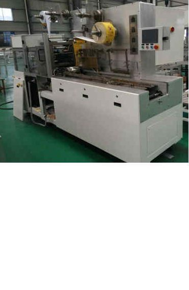 | آلة تعبئة الصابون، نوع الورق الناعمتغليف وتثبيت الورق الناعم ذو الطبقتين تلقائيًا: المسؤولية الأساسية لهذا الجهاز هي تطبيق تغليف ذو طبقتين على ألواح الصابون المصبوبة. الطبقة الداخلية عادة ما تكون دعامة/بطانة من الورق المقوى الصلب (تُستخدم للاحتفاظ بالشكل والدعم الهيكلي)، بينما الطبقة الخارجية هي ورق ناعم مطلي أو ورق مركب مطبوع برسومات رائعة. أثناء التعبئة، ينفذ تلقائيًا الطي النهائي وتثبيت الزوايا، مما يشكل مظهرًا كلاسيكيًا ومغلفًا بشكل عتيق. |
| 18 | 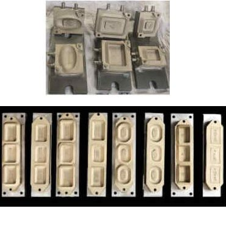 | سيتم تخصيص قالب الصابون وفقًا لشكل وحجم وشعار الصابون المطلوب من قبل المشتريسيتم تخصيص قالب الصابون وفقًا لشكل وحجم وشعار الصابون المطلوب من قبل المشتري. إعطاء الشكل الهندسي ثلاثي الأبعاد النهائي: يتكون القالب من نصفين رئيسيين متطابقين (القالب العلوي الذكري والقالب السفلي الأنثوي). عندما يتم إدخال كتلة الصابون داخل القالب وتتعرض لعملية ضغط ميكانيكي أو هوائي عالي الضغط، يخضع جسم الصابون لتشوه بلاستيكي داخل تجاويف القالب، مما يؤدي إلى أشكال مثالية بيضاوية أو دائرية أو مستطيلة أو أشكال غير منتظمة مخصصة متنوعة. |
تُباع معدات جاسون الميكانيكية لأكثر من 50 دولة حول العالم.
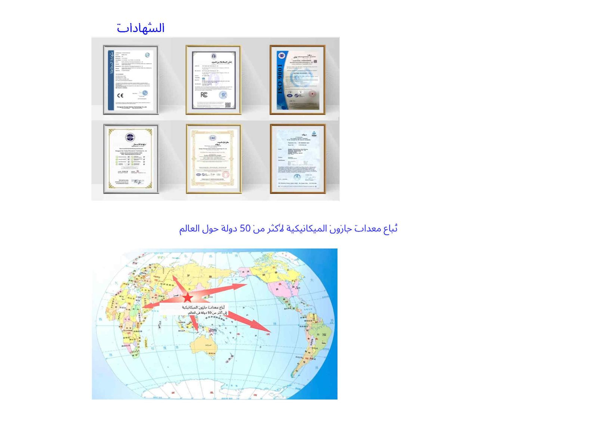
Q1: هل تقبلون التخصيص؟
يمكن تخصيص جميع أجهزتنا وفقًا لمتطلبات العميل.
Q2: كيف تضمنون التشغيل الطبيعي للآلة؟
يتم اختبار كل آلة في مصنعنا قبل الشحن. سنقوم بضبط الآلة للحصول على أفضل أداء قبل التسليم، وقطع الغيار متوفرة دائمًا ومجانية لكم خلال سنة الضمان.
Q3: كيف يمكنني تركيب الآلة عند وصولها؟
سنرسل مهندسين إلى الخارج لمساعدة العميل في التركيب والتشغيل والتدريب.
Q4: ماذا يجب أن أفعل لاختيار أفضل آلة لنا؟
1) أخبرنا بالمادة التي تريد معالجتها – وسنختار نوع الآلة المناسب لكم. 2) ثم أخبرنا بالطاقة الإنتاجية التي تحتاجها. 3) وأخيرًا أخبرنا بالقطر الداخلي للحاوية لمساعدتكم في اختيار أفضل قطر لرأس التعبئة.
Q5: هل لديكم دليل أو فيديو تشغيل لنتمكن من معرفة المزيد عن الآلة؟
نعم، سنرسل لكم الدليل وفيديو التشغيل بعد أن تطلبوا ذلك.
Q6: إذا تعطلت بعض قطع الغيار، كيف يتم حل المشكلة؟
أولًا، يرجى التقاط صورة أو تصوير فيديو لعرض الأجزاء المتعطلة. بعد تأكيد المشكلة من قبل مهندسنا، سنرسل لكم قطع الغيار مجانًا خلال سنة الضمان، لكن تكلفة الشحن تكون على حسابكم.
تواصل مع فريقنا الهندسي مباشرة عبر الواتساب أو البريد الإلكتروني للحصول على الأسعار والمواصفات الفنية.
💬 الدردشة عبر WhatsApp WhatsApp: +86-13937853263